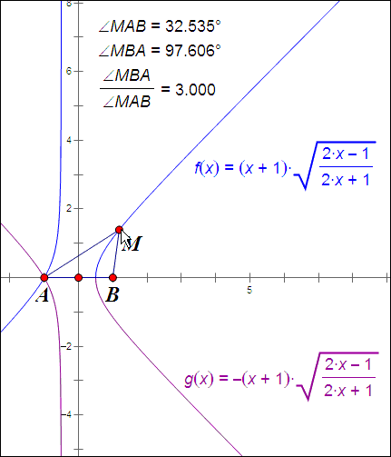
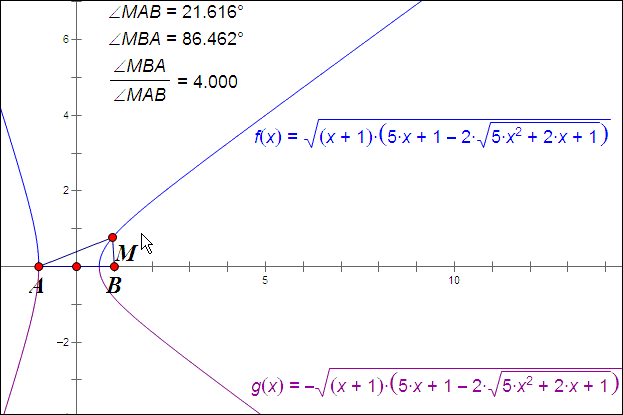
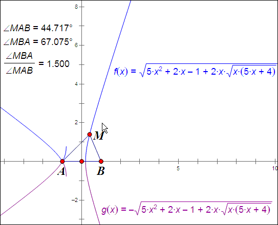
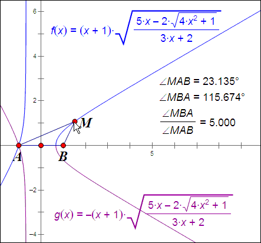
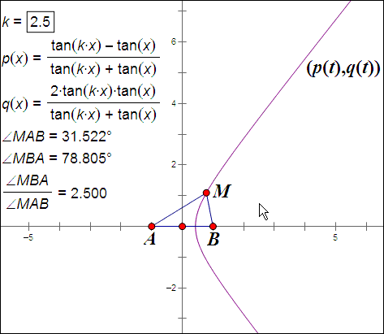

[几何] 关于 $\angle MBA=k\angle MAB$ 的轨迹
刚才无聊看352的博客，看到此文http://blog.sina.com.cn/s/blog_68ef132301016aqo.html，文中提到的是关于双曲线与 $\angle MBA=2\angle MAB$ 的题目。
话说我对那些题的什么前世今生并不感兴趣，倒是对一般情况更加感兴趣，也就是当更一般的角度比关系 $\angle MBA=k\angle MAB$ 时会形成什么曲线呢？
不失一般性，设 $A(-1,0)$, $B(1,0)$，动点 $M$ 满足 $\angle MBA=k\angle MAB$，$k>1$。
设 $M(x,y)$，由 $k>1$ 可知点 $M$ 在 $y$ 轴右边，即 $x>0$，由对称性，我们先考虑在第一象限内的情形（对称下去就是第四象限内的情形，这也是后面得到的那些方程中的 $y$ 总是偶次的原因）。
当 $\angle MBA$ 不是直角时，有
\begin{align*}
\tan\angle MAB&=\frac y{x+1},\\
\tan\angle MBA&=\frac y{1-x},
\end{align*}
解出 $x$, $y$ 并代入 $\angle MBA=k\angle MAB$，有
\begin{equation*}
\left\{\begin{aligned}
x&=\frac{\tan k\angle MAB-\tan\angle MAB}{\tan k\angle MAB+\tan\angle MAB},\\
y&=\frac{2\tan k\angle MAB\cdot\tan\angle MAB}{\tan k\angle MAB+\tan\angle MAB},
\end{aligned}\right.
\end{equation*}
这就是 $M$ 点轨迹的参数方程（严格地说是缺少了一个点的，可以另行补上，这里暂且不提），其中 $\angle MAB$ 为参数，由 $0<\angle MBA+\angle MAB<\pi$ 得 $0<\angle MAB<\dfrac\pi{k+1}$。
再把第四象限也考虑上，那么只需写成
\begin{equation}\label{kpjcsfc}
\left\{\begin{aligned}
x&=\frac{\tan kt-\tan t}{\tan kt+\tan t},\\
y&=\frac{2\tan kt\cdot\tan t}{\tan kt+\tan t},
\end{aligned}\right. \quad t~\text{为参数，}\abs t<\frac\pi{k+1}.
\end{equation}
参数方程有了，那能不能消去参数从而得到一个只有 $x$, $y$ 的方程甚至写成显函数的形式？
首先说明一点，如果定值 $k$ 是个无理数，那显然已经超出我的能力范围（在还没得到上述参数方程之前，我的第一感觉就是如果是无理数比，肯定不会有简单的结果，那大概是数学家才能玩的东西，所以我绝对不会提出352文中的那个猜想，强烈的直觉告诉我不可能有这么简单的结果），因此下面我只研究有理数比的情形。
设 $k=\dfrac nm$，其中 $m$, $n\in\mbb N^+$，互素且 $n>m$。则 $\angle MBA:\angle MAB=n:m$, $\angle MAB<\dfrac{m\pi}{m+n}$，所以 $\dfrac y{x+1}<\tan\dfrac{m\pi}{m+n}$。
由比例条件，可设 $\dfrac{\angle MBA}n=\dfrac{\angle MAB}m=\theta $，则由 $n$ 倍角公式，有
\begin{align}
\tan\angle MAB&=\tan m\theta=\frac{C_m^1\tan^1\theta -C_m^3\tan^3\theta +C_m^5\tan^5\theta -\cdots }{C_m^0\tan^0\theta -C_m^2\tan^2\theta +C_m^4\tan^4\theta -\cdots },\\
\tan\angle MBA&=\tan n\theta=\frac{C_n^1\tan^1\theta -C_n^3\tan^3\theta +C_n^5\tan^5\theta -\cdots }{C_n^0\tan^0\theta -C_n^2\tan^2\theta +C_n^4\tan^4\theta -\cdots },
\end{align}
所以，由以下方程组
\begin{equation}
\left\{\begin{aligned}
\frac y{x+1}&=\frac{C_m^1\tan^1\theta -C_m^3\tan^3\theta +C_m^5\tan^5\theta -\cdots }{C_m^0\tan^0\theta -C_m^2\tan^2\theta +C_m^4\tan^4\theta -\cdots },\\
\frac y{1-x}&=\frac{C_n^1\tan^1\theta -C_n^3\tan^3\theta +C_n^5\tan^5\theta -\cdots }{C_n^0\tan^0\theta -C_n^2\tan^2\theta +C_n^4\tan^4\theta -\cdots },
\end{aligned}\right.
\end{equation}
消去 $\tan\theta $ 后得出的方程所确定的曲线就是点 $M$ 所在的曲线。
这个消元在理论上是必定能消去的（用结式之类），但是对于较大的 $m$, $n$，实在非软件做不可，而且可以预见，当 $m$, $n$ 越大，最后出来的方程的次数必定越高，而且还需要排除曲线的一些多余部分才能得到真正的 $M$ 的轨迹，所以对于一般的 $m$, $n$ 还是没什么好搞的了。
下面来点较小的 $m$, $n$ 来试试消元看看是什么方程。
我们让 $m$, $n$ 取最小，即 $m=1$, $n=2$，这就是最简单的情况，此时消去 $\tan\theta $ 后将得到一条二次曲线 $3x^2+2x-y^2-1=0$，也就是352文中的题目的情形，离心率恰好是 $2$。
当 $m=1$, $n=3$，消去 $\tan\theta $ 得到 $2x^3+3x^2-2xy^2-y^2-1$，已经是三次曲线了，不过还算简单，因为 $y$ 都是二次，可以直接写成函数形式，注意限制，最终可以得出此时点 $M$ 的轨迹为\[y=\pm(x+1)\sqrt{\frac{2x-1}{2x+1}} \quad x>\frac12.\]作个图来验证一下：

(69.96 KB)
2012-10-12 17:15
注意左边的那些曲线不用管它，因为已经限定了 $x>1/2$。这样我们足以整出一道题出来：给出上面这个函数及其上的动点，证明那个三倍角关系。:D 嘿嘿
当 $m=1$, $n=4$，消去 $\tan\theta $ 得到 $5x^4+12x^3-10x^2y^2+6x^2-12xy^2-4x+y^4-2y^2-3=0$，这就复杂一点，虽然也能用求根公式解出函数形式，但判断哪部分曲线才是真正的轨迹时还有点麻烦，具体过程就不写了，只给出结果为\[y=\pm\sqrt{(x+1)\bigl(5x+1-2\sqrt{5x^2+2x+1}\bigr)}\quad x>\frac35.\]作图验证：

(46.59 KB)
2012-10-12 18:03
当 $m=2$, $n=3$，消去 $\tan\theta $ 得到 $5x^4+4x^3-10x^2y^2-6x^2-4xy^2-4x+y^4+2y^2+1=0$，方程跟上一个居然非常地像！但是排除的时候比上面的要麻烦，结果为\[y=\pm\sqrt{5x^2+2x-1+2x\sqrt{x(5x+4)}}\quad x>\frac15.\]作图验证：

(60.15 KB)
2012-10-12 19:11
当 $m=1$, $n=5$，消去 $\tan\theta $ 得到 $3x^5+10x^4-10x^3y^2+10x^3-20x^2y^2+3xy^4-10xy^2-5x+2y^4-2=0$，$x$ 的次数上升到五次了，还好 $y$ 的次数还是跟上面一样，可以解出来，经排除，结果为\[y=\pm(x+1)\sqrt{\frac{5x-2\sqrt{4x^2+1}}{3x+2}}\quad x>\frac23.\]作图验证：

(64.24 KB)
2012-10-12 19:53
当 $m=2$, $n=5$，消去 $\tan\theta $ 得到
$7 x^6+18 x^5-35 x^4 y^2+5 x^4-60 x^3 y^2-20 x^3+21 x^2 y^4-10 x^2 y^2-15 x^2+18 x y^4+20 x y^2+2 x-y^6+y^4+5 y^2+3=0$
oh！六次来了，想解出 $y$？只有卡当公式了，没办法，既然写不成显函数那还是乖乖用回参数方程好了。

(67.47 KB)
2012-10-12 21:19
先扯到这吧……闪先
|
本主题由 kuing 于 2013-1-19 16:45 分类
 发表于 2012-10-12 17:01
发表于 2012-10-12 17:01
 发表于 2012-10-15 10:01
发表于 2012-10-15 10:01